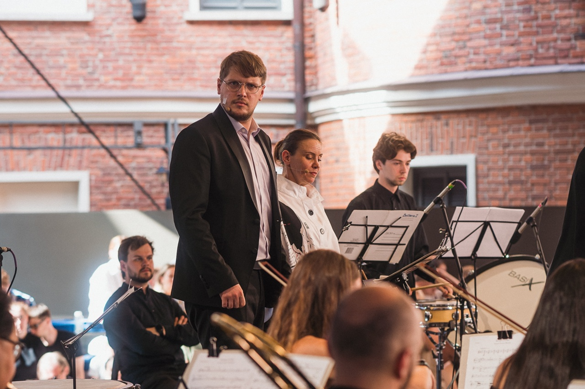
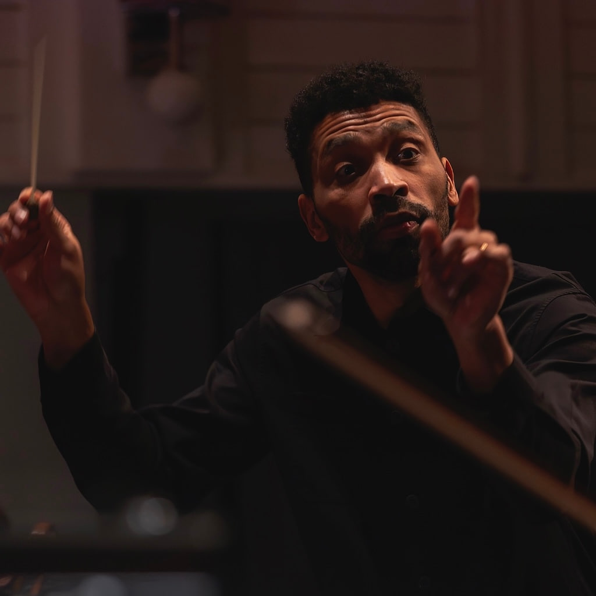
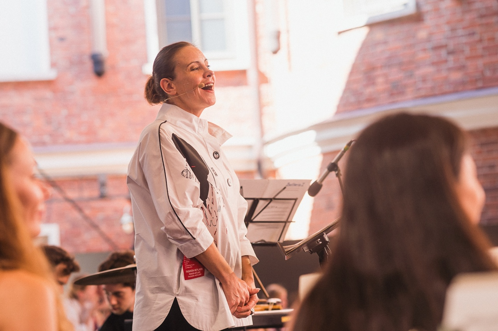
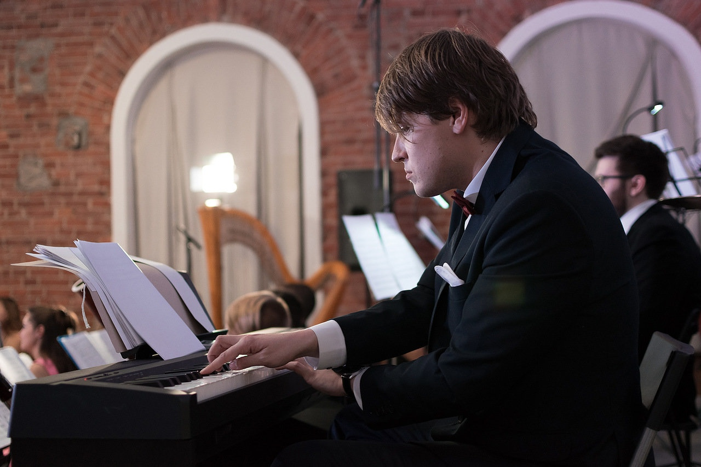

Участники Оркестра 1703
Каждое выступление — результат работы целой команды. Познакомьтесь с музыкантами, которые создают атмосферу наших концертов.



Каждое выступление — результат работы целой команды. Познакомьтесь с музыкантами, которые создают атмосферу наших концертов.



